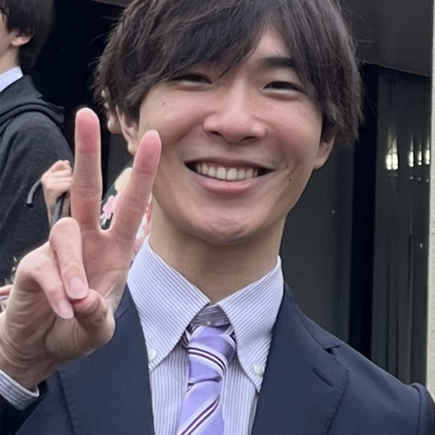

小室 竜也Ryuya Komuro
日本学術振興会特別研究員PD（東北大学大学院国際文化研究科） JSPS Postdoctoral Research Fellow, Graduate School of International Cultural Studies, Tohoku University
第二言語習得・語彙習得・英語教育に興味があります。2024年3月、筑波大学大学院人文社会科学研究科にて博士（文学）を取得しました。付随的・意図的語彙学習、語彙サイズテストの妥当性検証、読解テストの自動採点など、実証的・計量的アプローチによる研究に取り組んでいます。現在は日本学術振興会特別研究員 (PD) として東北大学に所属し、言語適性と学習の相互作用の検討や、語彙・文法テストの妥当性検証などのプロジェクトに取り組んでいます。統計解析・心理言語学実験に役立つツールをGitHub上で公開しています。
I am interested in second language acquisition, vocabulary learning, and English language education. I received my Ph.D. in Literature from the Graduate School of Humanities and Social Sciences, University of Tsukuba, in March 2024. My research takes an empirical, quantitative approach to topics such as incidental and intentional vocabulary learning, the validation of vocabulary size tests, and automated scoring of reading tests. I am currently a JSPS Postdoctoral Research Fellow (PD) affiliated with Tohoku University, working on projects examining the interaction between language aptitude and learning, and validating vocabulary and grammar tests. I share tools useful for statistical analysis and psycholinguistic experiments on GitHub.
学歴Education
- 2024年3月筑波大学大学院 人文社会科学研究群 人文学学位プログラム 修了・博士（文学）
- 2021年3月筑波大学大学院 人文社会科学研究科 現代語現代文化専攻 修了（修士）
- Mar. 2024Ph.D. in Literature, Degree Programs in Humanities and Social Sciences, University of Tsukuba
- Mar. 2021M.A., Graduate School of Humanities and Social Sciences, University of Tsukuba
職歴Career
- 2024年4月–東北大学大学院国際文化研究科／日本学術振興会特別研究員（PD）
- 2023年4月–2024年3月日本学術振興会特別研究員（DC2）
- Apr. 2024–JSPS Postdoctoral Research Fellow (PD), Graduate School of International Cultural Studies, Tohoku University
- Apr. 2023–Mar. 2024JSPS Research Fellow (DC2)
研究Research
研究業績Research & Publications
主な論文Selected Publications
- Hijikata, Y., Hoshino, Y., Shimizu, H., Komuro, R., Mizugaki, R., Ogiso, T., Tando, K., Hanawa, C., & Ushiro, Y. (2026). Question-answering processes in reading multiple texts in a second language: Evidence from eye tracking and think-aloud protocols. Language Testing.
- 卯城祐司・小室竜也 (2025). TOEIC® Programの大学・高校における活用について –語彙の洗練性指標および複雑性指標に基づく分析と学習指導要領との関連性から–.（招待）
- 卯城祐司・小室竜也 (2025). 英語4技能テストにおける受験者能力の推定：TOEIC L&R・S&WおよびTOEIC Bridge L&R・S&Wのデータを用いて.（招待）
- Komuro, R. (2024). Comparing gap-filling and multiple-choice gloss based on the involvement load hypothesis: A Bayesian estimation of homogeneity. Language Education & Technology, 61, 59-80. — 2025年度LET学会賞（学術論文賞）受賞— Awarded the LET Society Award (Best Paper) 2025
- Ogiso, T., Komuro, R., Nahatame, S., Mizugaki, R., Tando, K., Mikami, Y., & Ushiro, Y. (2023). Effects of image instruction on coherent understanding of the protagonist and spatial information during narrative reading for learners of English as a foreign language. ARELE, 34, 65-80.
※ 全論文リストは researchmap をご覧ください。 See researchmap for the complete list of publications. researchmap ↗
受賞・研究奨励Awards
- 2025外国語教育メディア学会(LET) 学会賞（論文賞）
- 2024日本言語テスト学会(JLTA) 2024年度若手研究者助成事業－大友賢二奨励賞（小室竜也・黒川皐月）
- 2022日本英語検定協会 英検研究助成 実践部門 入選（岡田龍平・小室竜也）
- 2021次世代研究者挑戦的研究プログラム 研究奨励費等支給対象学生採用
- 2021教科書研究センター 大学院生の教科書研究論文助成金
- 2019日本英語検定協会 英検研究助成 研究部門 入選
競争的資金Grants
- 2025–2029基盤研究(B)「生成AI技術を活用した個別最適な学びを実現する英文読解テストの開発」（卯城祐司・小室竜也・濱田彰・星野由子、研究分担者）Grant-in-Aid for Scientific Research (B), "Developing an English reading test for personalized learning using generative AI" (Ushiro, Komuro, Hamada, Hoshino; Co-Investigator)
- 2025–2028特別研究員奨励費(PD)「脳イメージングを用いた言語的性と学習の相互作用の検討」（研究代表者）JSPS Research Fellowship (PD), "The interaction between linguistic gender and learning: A brain imaging approach" (Principal Investigator)
- 2025–2028若手研究「分野横断型アプローチによる英語冠詞の文法テストの妥当性検証」（研究代表者）Grant-in-Aid for Early-Career Scientists, "Validating a grammar test for English articles: A cross-disciplinary approach" (Principal Investigator)
- 2023–2025特別研究員奨励費(DC2)「日本人英語学習者の発表語彙知識測定」（研究代表者）JSPS Research Fellowship (DC2), "Measuring productive vocabulary knowledge of Japanese EFL learners" (Principal Investigator)
学会発表を見る（約20件）Show conference presentations (~20)
- Uchihara, T., Pellicer-Sánchez, A., Komuro, R., Chang, L. L.-C., Doi, A., Cui, H., Jeong, H., Revesz, A., Saito, K., & Sugiura, M. The effects of multimodal input on L2 vocabulary learning: Exploring its neurocognitive mechanisms. EuroSLA35, 2026.
- Komuro, R., Hamada, A., Hoshino, Y., & Ushiro, Y. Automated scoring of open-ended responses in computer-adaptive English reading tests: Comparing generative AI accuracy. 10th Annual Conference for the Association for Reading and Writing in Asia, 2026.
- Oikawa, G., Sekiguchi, S., & Komuro, R. The effects of written languaging on lexical development in L2 writing through AI-generated feedback. Technology-Enhanced Language Learning International Conference, 2025.
- 小室竜也・及川凱亜. 日本人EFL学習者のための語彙サイズテストVST-NJ8の妥当性検証：「わからない」選択肢の追加と回答時間の関係性. 日本言語テスト学会(JLTA) 第28回全国研究大会, 2025.
- Komuro, R., Uchihara, T., Jeong, H., Kurokawa, S., & Sugiura, M. Secondary meaning learning of homographs: How words with multiple meanings are acquired. Vocab@Maryland, 2025.
- Suzuki, K., & Komuro, R. Who benefits from semantic elaboration using the word part strategy for English vocabulary learning? American Association for Applied Linguistics, 2025.
- 小室竜也・黒川皐月. Yes No語彙テストにおける採点方法の検討：ベイズモデル選択とテスト情報関数に基づいて. 日本言語テスト学会(JLTA) 第27回全国研究大会, 2024.
- 卯城祐司・小室竜也・下山聡子. TOEIC® Programの大学・高校における活用について–「学習内容との関係性」と「就業経験有無の影響」に関する調査分析結果に示唆されることとは–. 大学英語教育学会(JACET)第63回国際大会, 2024.
- 小室竜也・前田啓貴・久保佑輔. 読解中の未知語推測能力の測定：Guessing from Context Testの妥当性検証. 日本言語テスト学会(JLTA) 第26回全国研究大会, 2023.
- Hijikata, Y., Komuro, R., Hanawa, C., Ta, N., Mizugaki, R., Tando, K., Ogiso, T., & Ushiro, Y. Influence of Question Types on Multiple-Document Reading Processes in a Second Language: An Eye-Tracking Study. AMLaP 2023, 2023.
- 卯城祐司・小室竜也. 令和4年度の新課程英語教科書コーパス及び共通テストコーパスに基づくTOEIC® L&R、TOEIC Bridge® L&Rの語彙の特徴2（特徴語の検討）. 大学英語教育学会(JACET)第62回国際大会, 2023.
- 土方裕子・星野由子・清水遥・小木曽智子・小室竜也・卯城祐司. 日本人英語学習者による複数文章読解問題の解答プロセス 発話プロトコルに基づく検証. 全国英語教育学会第48回香川研究大会, 2023.
- 小室竜也. 付随的語彙学習における遭遇頻度・読解不安・語彙熟達度の関係：読解中の辞書使用を通して. 全国英語教育学会第48回香川研究大会, 2023.
- 卯城祐司・小室竜也. 令和4年度の新課程英語教科書コーパス及び共通テストコーパスに基づくTOEIC® L&R、TOEIC Bridge® L&Rの語彙の特徴1（カバー率の検討）. 全国英語教育学会第48回香川研究大会, 2023.
- 小室竜也. 関与負荷仮説に基づく空所補充および多肢選択式問題の比較：ベイズ推定による同質性の検討. 外国語教育メディア学会(LET)第62回全国研究大会, 2023.
- Ushiro, Y., & Komuro, R. The effects of reading instruction on recall rate: A focus on second language learners. The 33rd Annual Meeting of the Society for Text & Discourse, 2023.
- 小木曽智子・小室竜也・名畑目真吾・水書亮・工藤大奈・丹藤慧也・三上洋介・小野由香子・卯城祐司. 読解教示と学習者の熟達度が物語文の空間・登場人物の一貫した理解に与える影響―思考発話プロトコルの分析から―. 全国英語教育学会第47回北海道研究大会, 2022.
- 小室竜也. 令和4年度検定教科書の語彙学習タスクの傾向調査—中学校と高校1年生の教科書を対象に—. 全国英語教育学会第47回北海道研究大会, 2022.
- Komuro, R., Mori, Y., Hosoda, M., Mizugaki, R., Tendo, K., Mikami, Y., & Ushiro, Y. The effects of reading instruction on temporal coherence maintenance: Focusing on second language learners. The 32nd Annual Meeting of the Society for Text & Discourse, 2022.
- 小室竜也. 日本人高校生および高専生の語彙学習方略使用と語彙サイズの関係―ランダムフォレストを用いた検討―. 外国語教育メディア学会(LET)関東支部第147回研究大会, 2022.
researchmap上には全30件程度の口頭発表が掲載されています。全件は researchmap をご覧ください。 researchmap lists around 30 presentations in total — see researchmap for the complete list.
プロジェクトProjects
GitHubプロジェクトGitHub Projects
研究のための統計解析ツールや、Web上で動作する心理言語学実験タスクをR・Python・Julia・JavaScriptで開発しています。以下はその一部です。
I build statistical-analysis tools and browser-based psycholinguistic experiment tasks in R, Python, Julia, and JavaScript. A selection is shown below.
GitHubで公開リポジトリをすべて見る → View all public repositories on GitHub →